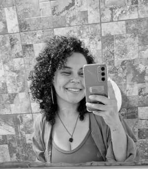

Fernanda Alves
Matemática • Física • Ciências Contabeis• Ciências de Dados
Formação Acadêmica
- Especialização em Metodologia do ensino da Matemática e da física — Pós Graduação - Centro Universitário Doctum — Data da conclusão:02/2021 ;
- Licenciatura em Matemática — Faculdade de Ciências Gerenciais de Manhuaçu — Data da conclusão: 02/2015;
- Bacharel em Ciências Contábeis — Centro universitário Newton Paiva — Data da conclusão: 2027;
- Tecnologia de ciênicas de Dados — Centro Universitário Internacional (Uninter) — Data da conclusão: 2027;
Perfil Acadêmico
Sou Fernanda Alves, apaixonada por educação, ciência e inovação. Minha formação é marcada pela interdisciplinaridade e pelo desejo de transformar realidades por meio do conhecimento.
Possuo pós-graduação em Metodologia do Ensino da Matemática e da Física pelo Centro Universitário Doctum (concluída em 2021), experiência que me permitiu aprofundar práticas pedagógicas e metodologias ativas para o ensino de ciências exatas.
Sou Licenciada em Matemática pela Faculdade de Ciências Gerenciais de Manhuaçu (concluída em 2015), formação que consolidou minha base teórica e prática no ensino e pesquisa.
Atualmente, sou Bacharelanda em Ciências Contábeis na Newton Paiva (previsão de conclusão em 2027), o que amplia minha visão analítica e estratégica sobre finanças e gestão.
Também estou cursando Tecnologia em Ciências de Dados pela Uninter (previsão de conclusão em 2027), desenvolvendo competências em análise de dados, programação e uso de ferramentas de Business Intelligence — conectando matemática, estatística e tecnologia para tomadas de decisão embasadas em evidências.
Esse conjunto de formações reforça minha habilidade de transitar entre áreas, unindo educação, gestão e ciência de dados para gerar soluções inovadoras e impacto social.